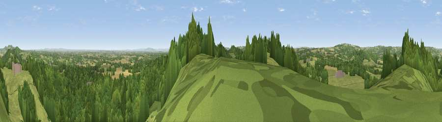

Viewpoint near Alfrick
#6742 in England · top 15% of its area beats it · near Alfrick · footpathWhere it is
The exact computed spot (SO 73325 53962). Click the marker for map links.
Public access: a public right of way passes within 7 m of this spot. Computed from Natural England's CRoW access layer and OpenStreetMap rights of way — not the legal definitive map. Always verify locally.
The view, rendered

A 360° render of this exact spot computed from the terrain model, tree cover and land cover — summer colours, afternoon light, calibrated against photographs of famous viewpoints. Real trees, hedges and buildings will differ in detail.
The panorama
Grey silhouette: terrain skyline in each direction (720 bearings, Earth curvature and refraction included). Dashed green: skyline with trees (+15 m) and buildings (+8 m) as obstacles. Blue strip: how far the ground is visible on each bearing.
Where the view opens
Wedge length = distance to the farthest visible ground on that bearing (vegetation-aware). Rings at 10, 25 and 50 km.
What fills the view
48% woodland · 43% grassland · 7% cropland ·
Angular shares of the visible panorama (visual magnitude), not map area. Landscape diversity 0.41 (0–1 Shannon).
Key numbers
More beautiful places nearby
The staircase of upgrades: each row has a higher view potential than everything closer. Driving times are estimates from straight-line distance, calibrated against real road routing — check an actual route before setting out.
| Place | Direction | Drive | Score |
|---|---|---|---|
| Ankerdine Hill | N · 3 km | ~7 min | 72.6 |
| Viewpoint near Storridge | SSE · 4 km | ~9 min | 73.5 |
| Viewpoint near Martley | NNE · 5 km | ~11 min | 78.1 |
| Viewpoint near West Malvern | SSE · 8 km | ~16 min | 81.4 |
| North Hill | SSE · 8 km | ~17 min | 86.8 |
| Worcestershire Beacon | SSE · 9 km | ~18 min | 87.1 |
| Viewpoint near West Quantoxhead | SSW · 127 km | ~151 min | 87.9 |
| Viewpoint near West Quantoxhead | SSW · 128 km | ~152 min | 88.7 |
52.18326, -2.39156 · source: screening · position refined by local search. Computed location — check access rights before visiting.